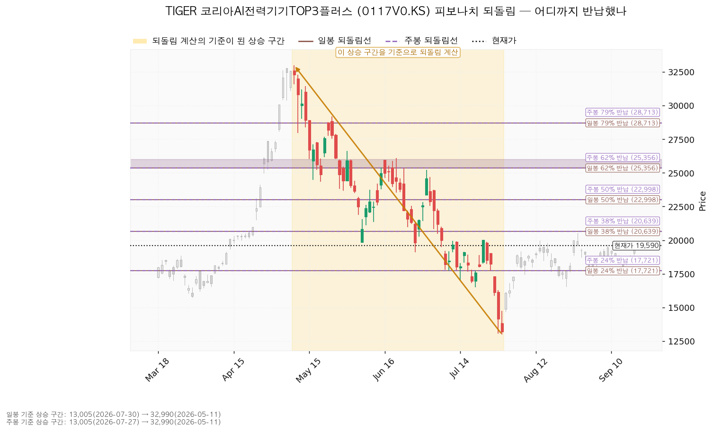
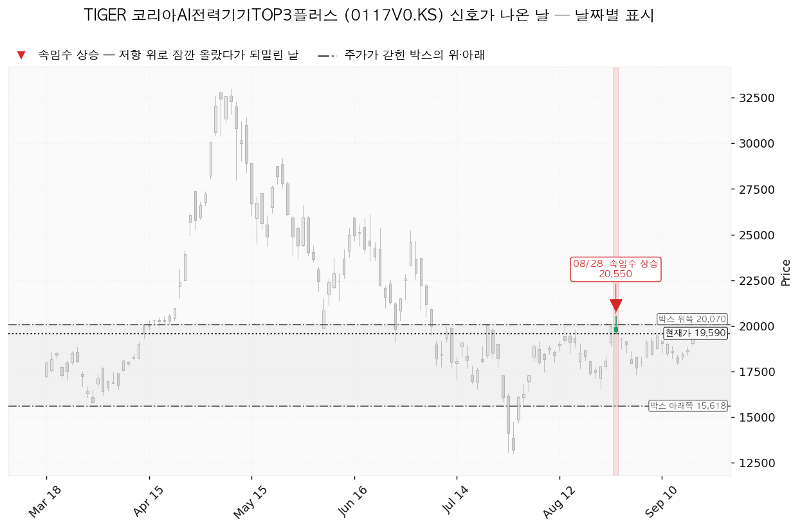
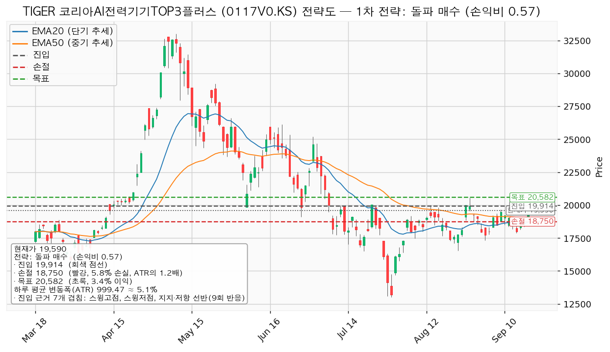
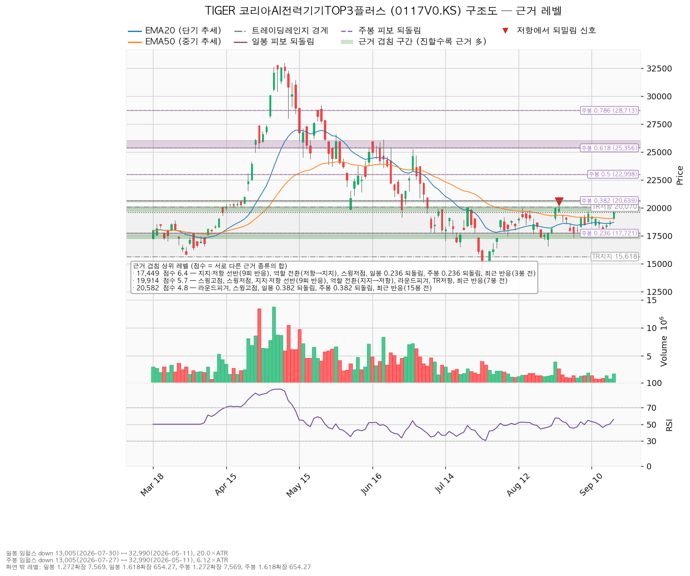

TIGER 코리아AI전력기기TOP3플러스 (0117V0.KS)는 국내 AI·데이터센터용 전력기기 상위 3종목에 집중 투자하는 국내 상장 ETF입니다.
| 구분 | 가격 | 판정 방식 | 현재가 대비 | 상태 |
|---|---|---|---|---|
| 회복선(진입 조건) | 17,449원 | 일봉 종가로 회복한 뒤 되돌림에서 지지 | -10.93% (하루 변동폭의 2.14배) | 회복 완료 — 이 선은 이미 지나왔습니다. 지금 남아 있는 진입 조건은 아래 확인선 19,914원 종가 돌파입니다 |
| 집행 손절 | 18,750원 | 장중 저가 도달 | -4.29% (0.84배) | 돌파 매수 셋업을 실행했을 때만 유효 — 이번 리포트는 그 셋업을 패스하므로 보유 400주에는 적용되지 않습니다 |
| 관망 종료 기준 / 보유분 정리 | 17,243원 | 일봉 종가로 이탈 | -11.98% (2.35배) | 유지 중 |
| 확인선 | 19,914원 | 일봉 종가 돌파 후 되돌림 지지 확인 | +1.65% (0.32배) | 미돌파 (9/18 고가 19,750원에서 멈춤) |
| 폐기선(구조) | 15,618원 | 이탈 후 3거래일 내 회복 실패, 또는 그 전에 14,619원 아래 종가 마감 + 반등에서 저항 확인 | -20.27% (3.97배) | 유지 중 — 하루 평균 변동폭의 3배를 넘게 떨어져 있어 실무상 무효화 기준으로 작동하지 않습니다. 보유자가 실제로 볼 선은 17,243원입니다 |
직전 리포트는 "18,912원을 종가로 회복하고 되돌림에서 지지되면 그 자리에서 손익비를 다시 산출한다, 1을 넘을 때만 집행한다"를 걸었습니다. 등록해 둔 진입선 19,305원도 함께 걸려 있었습니다.
| 직전이 건 조건 | 판정 | 근거 |
|---|---|---|
| 회복선 18,912원 종가 회복 | 충족 | 9/18 종가 19,590원 |
| 진입선 19,305원 종가 돌파 | 충족 | 같은 봉 |
| 확인선 19,914원 종가 돌파 | 미충족 | 9/18 고가 19,750원, 종가 19,590원 — 장중에도 닿지 않았습니다 |
| 관망 종료 17,243원 종가 이탈 | 미충족 | 9/18 저가 18,910원 |
| 집행 손절 18,350원 장중 도달 | 미충족 | 셋업을 집행하지 않았으므로 규율 대상이 아니었습니다 |
| 폐기선 15,618원 | 미충족 | 유지 중 |
9월 18일 봉은 시가 19,050원 / 고가 19,750원 / 저가 18,910원 / 종가 19,590원, 거래량 1,837,075주였습니다. 직전 5거래일 거래량이 85만~149만 주였으니 이날만 눈에 띄게 늘었습니다.
| 항목 | 2026-09-17 | 2026-09-18 | 왜 움직였나 |
|---|---|---|---|
| 회복선 | 18,912원 | 17,449원 (회복 완료) | 종가가 18,912원을 넘어서면서 회복 매수 셋업이 성립할 자리가 없어졌고, 구조상 회복선이 그 아래 6.4점 구간으로 내려갔습니다 |
| 집행 손절 | 18,350원 | 18,750원 | 대표 셋업이 회복 매수에서 돌파 매수로 바뀌어, 손절 근거 구간이 18,598~19,029원에서 19,000~19,110원으로 올라갔습니다 |
| 관망 종료 기준 | 17,243원 | 17,243원 | 그대로입니다. 이 가격을 종가로 이탈한 날이 없었으므로 옮기지 않았습니다 |
| 확인선 | 19,914원 | 19,914원 | 그대로입니다 |
| 폐기선 | 15,618원 | 15,618원 | 그대로입니다 |
| 대표 셋업 | 회복 매수 / 진입 19,305 · 손절 18,350 · 목표 19,914 | 돌파 매수 / 진입 19,914 · 손절 18,750 · 목표 20,582 | 가격이 올라와 회복형이 소멸하고, 박스 상단 돌파형이 자리를 넘겨받았습니다 |
| 손익비 | 1:0.64 (손절 0.96 ATR) | 1:0.57 (손절 1.16 ATR) | 목표까지의 거리보다 손절 폭이 더 늘었습니다 |
| 하루 평균 변동폭 | 994원 | 999원 | 9/18의 840원짜리 봉이 반영됐습니다 |
직전 리포트는 9/17 종가를 18,670원으로 적었고 시세 조회값 18,675원과 5원 차이가 난다고 밝혔습니다. 확정된 값은 18,675원이며, 이번 리포트의 등락 계산은 그 값을 씁니다.
결론은 직전과 같습니다 — 보유 유지, 추가·신규 매수 패스. 바뀐 것은 둘입니다.
1. 패스의 이유가 "조건이 아직 안 왔다"에서 "조건이 왔는데 재산정한 손익비가 미달이다"로 옮겨 갔습니다. 판정을 마친 상태입니다. 2. 섹터 상대강도가 상위권 추격에서 주도섹터 2위로 올라왔습니다(아래 컨센서스 절 참조). 직전 리포트의 "주도섹터는 아니다"라는 판정은 이번에 뒤집힙니다.
직전 리포트에서 정정할 오류는 없습니다.
| 항목 | 값 |
|---|---|
| 보유 수량 | 400주 (2026-08-03 1회 매수) |
| 평단 | 18,375원 |
| 현재가 | 19,590원 (9/18 일봉 종가) |
| 평가손익 | +486,000원 (+6.61%) |
| 평가금액 | 7,836,000원 |
같은 전력기기 테마로 LS ELECTRIC (010120.KS) 39주(평단 233,648원)를 따로 들고 계십니다. 이 ETF의 비중을 정할 때 개별 종목 쪽 노출과 합쳐서 보셔야 합니다.
| 항목 | 값 |
|---|---|
| 현재가 | 19,590원 (전일 대비 +4.90%) |
| EMA20 / EMA50 (단기·중기 평균 가격선) | 18,693원 / 19,050원 |
| RSI(14) — 과열·침체를 0~100으로 보는 지표 | 55.83 (중립) |
| ATR — 하루 평균 변동폭 | 999원 (주가의 5.10%) |
| 국면 | 횡보 레인지 (구조 유지 — 하단 사수 조건부) |
현재가는 EMA20 위 +4.80%, EMA50 위 +2.84%에 있습니다. 직전 리포트에서는 EMA50 아래에 있었으므로, 하루 만에 중기 평균 가격선 위로 올라선 셈입니다. 위쪽에서 가장 가까운 저항은 19,680~20,070원 구간이고 현재가는 그 구간의 아래 끝을 90원 앞두고 있습니다. 아래 표와 본문에 나오는 라운드피겨는 19,000원·20,000원처럼 딱 떨어지는 가격을 말하며, 주문이 몰려 반응이 잦은 자리입니다.
40봉(약 두 달)치 일봉을 창으로 잡았습니다. 조회한 전체 일봉은 226봉이고, 40·90·180봉 세 창을 모두 시험한 뒤 가격이 가장 잘 지킨 창을 골랐습니다.
| 창 | 가격이 박스 안에 머문 비율 | 방향성 | 박스 폭(ATR 배수) | 유효 |
|---|---|---|---|---|
| 40봉 (채택) | 0.95 | 0.348 | 4.45 | 예 |
| 90봉 | 0.911 | 0.555 | 11.50 | 예 |
| 180봉 | 0.894 | 0.207 | 16.04 | 예 |
채택된 박스는 15,618~20,070원이며, 현재가는 박스 높이의 89.2% 지점에 있습니다. 직전 리포트의 68.6%에서 하루 만에 상단 쪽으로 붙었습니다.
박스 안쪽 관측치입니다.
Wyckoff 국면 후보도 같은 이유로 미확정입니다.
되돌림선의 기준이 된 구간은 하락 구간입니다 — 5월 11일 32,990원에서 7월 30일 13,005원까지, 하루 변동폭의 20.0배짜리 낙폭입니다. 주봉도 같은 두 점(7월 27일 주 저점 13,005원 ↔ 5월 11일 32,990원, 6.12배)을 잡아 되돌림선 값이 일봉과 같습니다. 일봉·주봉 모두 계산에 성공했습니다.
| 되돌림 | 가격 | 현재가 대비 |
|---|---|---|
| 24% 반납 | 17,721원 | -9.54% |
| 38% 반납 | 20,639원 | +5.36% |
| 50% 반납 | 22,998원 | +17.39% |
| 62% 반납 | 25,356원 | +29.43% |
현재가 19,590원은 24% 선 위, 38% 선 아래입니다. 대표 셋업의 목표 20,582원은 38% 되돌림선 20,639원과 같은 겹침 구간(20,500~20,639원) 안에 있습니다. 하락 구간이 기준이라 확장선(7,569원·654원)은 현재가보다 아래에 찍히므로 실무에서 쓰지 않습니다.

신호로 잡힌 날은 하루입니다.
| 날짜 | 신호 | 가격 | 뜻 |
|---|---|---|---|
| 2026-08-28 | 속임수 상승(upthrust) | 20,550원 | 박스 상단 20,070원 위로 잠깐 올라갔다가 되밀린 날 |
8월 28일 이후 박스 상단을 다시 시험하지 못했고, 9월 9일 고점 19,680원, 9월 18일 고점 19,750원에서 차례로 멈췄습니다. 상단을 한 번 실패해 본 상태라는 것이, 확인선 19,914원을 종가로 넘기 전에는 신규 매수를 보류하는 근거입니다.

두 개가 산출됐고, 대표 셋업은 돌파 매수입니다. 선정 사유를 그대로 옮깁니다 — 손익비 0.57 × 구조 증명도(돌파 확인형) × 근거 겹침 5.7점. 저항을 종가로 넘긴 뒤 진입하므로 진입가는 불리하지만 구조가 먼저 증명됩니다. 이번에는 손익비 1등과 대표 셋업이 같은 것이어서, 손익비와 증명도가 서로 갈리는 트레이드오프는 발생하지 않았습니다.
| 항목 | 대표 — 돌파 매수 (breakout_long) | 눌림 매수 (pullback_long) |
|---|---|---|
| 엣지 학파 | 모멘텀 | 평균회귀 |
| 전제 | 저항을 돌파하면 그 방향이 이어진다 | 지지로 눌릴 때 산다 — 되돌림이 멈추는 자리를 노린다 |
| 성격 | 자주 틀리고 소수가 크게 맞는 유형 (이 유형의 일반적 성격이며 이 종목의 과거 성적을 따로 검증해 측정한 값이 아닙니다) | 승률이 높고 이익 폭이 작은 유형. 저항에서 전량 청산이 정합적입니다 |
| 구조 증명도 | 돌파 확인형 (가중치 1.0) | 선취형·구조 미확인 (가중치 0.7) |
| 진입 | 19,914원 — 근거 7개 겹침: 스윙고점 + 스윙저점 + 지지·저항 선반(9회 반응) + 역할 전환(지지→저항) + 라운드피겨 + 박스 상단 + 최근 반응(7봉 전), 겹침 5.7점 (구간 19,680~20,070원) | 19,047원 — 근거 5개 겹침: 라운드피겨 + 지지·저항 선반(7회 반응) + EMA50 + 스윙저점 + 최근 반응(30봉 전), 겹침 4.5점 (구간 19,000~19,110원) |
| 손절 | 18,750원 — 근거 겹침 구간(19,000~19,110원, 4.5점) 바로 아래 | 16,993원 — 손절이 근거 겹침 구간 안에 놓여 구간 하단 아래로 밀어냈습니다 |
| 목표 | 20,582원 — 근거 5개 겹침, 4.8점 (구간 20,500~20,639원) | 19,914원 — 근거 7개 겹침, 5.7점 |
| 손익비 | 1:0.57 (손절 폭 1,164원 = 1.16 ATR, 5.84%) | 1:0.42 (손절 폭 2,054원 = 2.06 ATR, 10.79%) |
| 청산 계획 | T1 20,582원에서 100% — 중간 레벨이 없어 분할 없이 단일 목표입니다. 전 구간 손익비도 0.57이며, T1 체결 후 본전 스탑을 걸 잔여분이 없으므로 하한 손익비는 산출되지 않았습니다 | T1 19,914원에서 100% — 같은 이유로 단일 목표, 전 구간 손익비 0.42, 하한 손익비 산출 없음 |
| 산출 결과 | 비매력·보류 | 비매력·보류 |
판정: 둘 다 패스입니다. 손익비가 1을 밑돕니다. 대표 셋업은 감수하는 폭이 1.16 ATR인데 얻으러 가는 폭이 0.67 ATR이고, 눌림 매수는 2.06 ATR을 걸고 0.87 ATR을 얻으러 갑니다.
두 셋업 모두 손절이 이미 근거 겹침 구간 아래로 밀려난 값이라, 구조적 손절 기준 손익비가 따로 산출되지 않았습니다. 손절 폭을 하루 변동폭 안으로 조여서 손익비를 좋게 만든 경우가 아니라는 뜻이며, 위의 0.57과 0.42가 구조를 그대로 반영한 값입니다. 눌림 매수의 손절 16,993원은 19,000~19,110원 구간 안쪽이 아니라 그 아래에 놓였고, 구간 안쪽에 두었다면 손절 폭이 좁아져 손익비가 더 좋아 보였겠지만 지지가 될 만한 가격대 한가운데에 손절을 두면 실제로는 더 자주 털립니다.
대표 셋업의 진입에서 목표까지는 0.67 ATR입니다. 하루 평균 변동폭의 2배에 못 미치므로 트레일링이나 다단 청산을 권하지 않습니다(이 2배는 관행적 기준이며 정설은 아닙니다). 집행 방침도 같습니다 — 진입 근거는 모멘텀이지만 집행은 박스 규칙을 따라 목표에서 전량 청산하고, 돌파 이후 구간은 이 포지션의 연장이 아니라 새 셋업으로 다시 잡습니다.

현재가 19,590원이 저항 구간(19,680~20,070원) 바로 아래에 붙어 있어 현재가 추격은 비권장입니다. 대기 좌표는 아래와 같습니다.
| 항목 | 값 |
|---|---|
| 되돌림 진입 후보 | 19,047원 (현재가 -2.77%, -0.54 ATR) — 겹침 4.5점 구간 19,000~19,110원 |
| EMA20 투영치 (5봉 후) | 18,693원 → 19,046원 |
| EMA50 투영치 (5봉 후) | 19,050원 → 19,148원 |
손익비가 1을 밑돌아 집행하지 않지만 기준은 적어 둡니다. 1회 매매에서 계좌의 1%를 잃는 것을 한도로 두면, 대표 셋업의 손절 폭 5.84%에서 나오는 포지션 크기는 계좌의 17.1%입니다. 한 종목에 계좌의 13%를 넘게 싣지 않는다는 규칙에 걸리므로 13%로 제한하며, 그 경우 손절에서 잃는 금액은 계좌의 0.76%로 줄어듭니다. 눌림 매수 쪽은 손절 폭이 넓어(10.79%) 포지션 크기가 계좌의 9.3%로 나오며 제한에 걸리지 않습니다. 이미 400주(평가금액 7,836,000원)를 들고 계시므로 이 숫자들은 추가 매수 여지를 잴 때만 의미가 있습니다.
| 단계 | 트리거 | 뜻 | 행동 |
|---|---|---|---|
| ① 관찰 | 일봉 종가가 19,914원 아래로 마감 | 구조 이탈 시작 — 되돌아 올라오면 속임수 하락일 수 있어 아직 무효가 아닙니다 | 신규 진입만 중단. 집행 손절은 그대로 둡니다 |
| ② 경고 | 이탈 후 3거래일 안에 19,914원을 종가로 회복하지 못함, 또는 그 전에 일봉 종가가 18,914원 아래로 마감(하루 평균 변동폭의 1배만큼 더 밀림) — 둘 중 먼저 오는 쪽 | 박스 안으로 되돌아 들어갈 가능성이 우세해집니다 | 잔여 비중 축소. 반등이 나오면 이 가격에서의 반응을 확인합니다 |
| ③ 무효 | 반등이 19,914원에서 막히고 그 아래로 되밀림 (지지가 저항으로 전환) | 셋업 폐기 — 구조 해석이 틀린 것으로 확정 | 포지션 정리 후 새 구조가 만들어질 때까지 관망 |
현재가 19,590원은 아직 19,914원 아래에 있어 이 셋업은 진입 조건 자체가 성립하지 않은 상태입니다. 시나리오 폐기선 15,618원은 이 단계 판정과 다른 가격이므로 섞어 쓰지 마십시오. 집행 손절 18,750원은 이 판정과 무관하게 별도로 작동합니다.
상승 전환 — 회복선 17,449원은 이미 종가로 되찾았고 지지도 유지 중이므로, 남은 조건은 19,914원 종가 돌파입니다. 구조로는 속임수 하락 확인 → 강세 신호 → 되돌림 지지 → 상승 국면 순서이며, 지금은 세 번째 단계 직전입니다. 행동은 19,914원 돌파 시 비중 확대입니다. 다만 그 자리 셋업의 손익비가 현재 0.57이므로, 돌파가 나오면 그때 다시 산출해 1을 넘을 때만 집행하십시오.
횡보 지속 — 15,618원을 지키면서 19,914원 아래 박스가 이어지는 경우입니다. 구조는 유지되며, 매물을 소화하는 데 시간이 필요한 국면입니다. 박스 상단 부근에서의 손바뀜은 이 국면의 정상적인 모습입니다. 신규 진입은 보류하고 아래 셋을 추적합니다.
| 추적 항목 | 현재 관측 |
|---|---|
| 지지 테스트마다 매도 거래량이 줄어드는지 | 테스트가 7/30 1회뿐이라 추세 산출 불가 |
| 저점이 절상되는지 | 절상 중 (13,005 → 16,535 → 17,315원) |
| 상승할 때 거래량과 캔들 폭이 확대되는지 | 상승봉/하락봉 거래량비 0.97 — 9/18 하루는 확대됐으나 박스 전 구간 기준으로는 아직 아닙니다 |
시나리오 폐기 — 15,618원 이탈 후 3거래일 내 회복에 실패하거나 그 전에 14,619원 아래로 종가 마감하고, 이후 반등에서 15,618원이 저항으로 확인되는 경우입니다. 매집이 아니라 재분산이었다는 뜻이며 추가 저점 갱신 가능성이 열립니다. 포지션 정리 후 새 매도 절정과 새 박스가 만들어질 때까지 관망합니다.
점수는 서로 다른 근거 종류의 가중치 합입니다. 같은 종류가 여러 개 겹쳐도 한 번만 더해집니다.
| 가격대 | 점수 | 근거 |
|---|---|---|
| 17,243~17,721원 (17,449) | 6.4 | 지지·저항 선반(9회 반응) + 역할 전환(저항→지지) + 스윙저점 + 일봉 24% 되돌림 + 주봉 24% 되돌림 + 최근 반응(3봉 전) |
| 19,680~20,070원 (19,914) | 5.7 | 스윙고점 + 스윙저점 + 지지·저항 선반(9회 반응) + 역할 전환(지지→저항) + 라운드피겨 + 박스 상단 + 최근 반응(7봉 전) |
| 20,500~20,639원 (20,582) | 4.8 | 라운드피겨 + 스윙고점 + 일봉 38% 되돌림 + 주봉 38% 되돌림 + 최근 반응(15봉 전) |
| 19,000~19,110원 (19,047) | 4.5 | 라운드피겨 + 지지·저항 선반(7회 반응) + EMA50 + 스윙저점 + 최근 반응(30봉 전) |
| 16,518~16,535원 (16,523) | 3.9 | 지지·저항 선반(6회 반응) + 역할 전환(저항→지지) + 스윙저점 + 최근 반응(18봉 전) |
| 17,793~18,000원 (17,862) | 3.3 | 지지·저항 선반(8회 반응) + 역할 전환(저항→지지) + 라운드피겨 + 최근 반응(3봉 전) |
| 18,500~18,693원 (18,596) | 2.1 | 라운드피겨 + EMA20 + 최근 반응(30봉 전) |
| 15,618원 | 1.2 | 박스 하단 |
아래쪽에서 가장 두꺼운 구간은 17,243~17,721원입니다. 한때 저항이던 자리가 지지로 바뀌었고 9회 반응했으며 사흘 전에도 실제로 되돌아섰습니다. 보유분 정리 기준을 이 구간의 아래 끝에 둔 이유입니다. 현재가 바로 아래에서 가장 두꺼운 구간은 19,000~19,110원(4.5점)이고, 대표 셋업의 손절 18,750원은 그 아래에 놓였습니다. 박스 하단 15,618원은 겹침 근거가 1.2점뿐이어서 방어력이 두껍지 않으며, 폐기선을 실무 기준으로 쓰지 않는 또 하나의 이유입니다.
확인선 19,914원은 위쪽에서 가장 두꺼운 구간의 중심이고, 대표 셋업의 진입가와 같은 가격입니다. 이것은 모순이 아니라 분기입니다 — 그 자리에서 막히고 되밀리면 신규 진입 없이 그대로 두는 것이고, 일봉 종가로 넘어서면 상승이 확정된 것이니 그때 손익비를 다시 산출합니다. 박스 상단 20,070원은 그 위의 맥락으로만 봅니다.

컨센서스는 증권사 애널리스트들의 전망이 모인 평균값입니다. 이 항목은 이번에도 수행할 수 없었습니다. 이 종목은 ETF여서 목표주가(평균·최저·최고)·애널리스트 수·추천등급·후행 PER·선행 PER·EPS 추정치·추정치 90일 변화·현금흐름이 모두 비어 있습니다. 따라서 배수 비교, 목표주가 분포 안에서의 현재가 위치, 추정치 방향으로 하락의 성격을 가르는 작업, 현금흐름 적자의 성격 구분, 상승 여력의 이익·배수 분해를 이번 리포트에서도 하지 못했습니다. 추정으로 메우지 않습니다.
목표 20,582원까지의 +5.06%도 이익 증가분과 배수 확장분으로 나눌 근거가 없으며, 구조 레벨(38% 되돌림선과 라운드피겨가 겹친 4.8점 구간)에서만 나온 값입니다.
대신 상대강도로 주도주 여부를 봅니다. 이 ETF 자체가 국내 AI전력기기 섹터의 기준 지표입니다.
| 섹터 | 20일 초과수익 | 5일 | 1일 |
|---|---|---|---|
| 건설 | +17.46%p | -2.37% | -1.00% |
| AI전력기기 (본 종목) | +13.12%p | +3.49% | +2.51% |
| 2차전지 | +7.58%p | -1.02% | -2.08% |
| 은행 | +7.11%p | -0.58% | -3.75% |
| 반도체 | +3.29%p | +1.78% | -0.12% |
| 조선 | +2.62%p | -2.95% | -3.53% |
국내 11개 섹터 중 20일 초과수익 2위이고, 1일·5일·20일 초과수익이 셋 다 양수인 섹터는 11개 중 이 섹터뿐입니다. 직전 리포트의 4위·+3.80%p에서 올라온 것인데, 하루치 초과수익이 +2.51%p이므로 나머지 변화분은 20일 창에서 빠져나간 과거 구간 때문입니다. 따라서 이 상승분 전부를 하루 사이의 수급 변화로 볼 수는 없습니다.
판정은 주도섹터 진입입니다. 직전 리포트의 "상위권 추격 그룹"에서 바뀌었습니다. 다만 가격 구조는 여전히 박스 상단을 한 번도 종가로 넘지 못한 상태이므로, 상대강도가 먼저 움직이고 가격 구조가 아직 따라오지 않은 국면입니다.
ETF라 실적 발표일이 없고, 재무 조회가 비어 있어 다음 실적일도 받지 못했습니다. 날짜가 있는 확인 이벤트는 매크로 일정에서 가져옵니다.
| 날짜 | 이벤트 | 그때 볼 것 |
|---|---|---|
| 2026-09-24 | 미국 신규 실업수당 청구 | 고용 둔화 신호 — 금리 경로가 전력·유틸리티 테마 밸류에이션에 걸립니다 |
| 2026-09-30 | 미국 PCE 물가 / GDP | 물가가 다시 오르면 장기금리가 올라 자본집약 테마에 불리합니다 |
| 2026-10-02 | 미국 고용보고서 (비농업 고용·실업률) | 같은 축의 확인 |
| 2026-10-14 | 미국 CPI | 이 리포트의 논지 무효화 판정 시점 |
| 2026-10-28 | FOMC 금리 결정 | 금리 경로가 확정되는 자리 — 이 결과를 보고 다음 리포트에서 좌표를 다시 잡습니다 |
폐기선 15,618원은 현재가에서 하루 평균 변동폭의 3.97배(-20.27%) 떨어져 있습니다. 3배를 넘으므로 실무상 무효화 기준으로 작동하지 않습니다 — 거기까지 가는 동안 이미 여러 번 판단을 수정할 기회가 지나갑니다. 가격으로 실제 작동하는 선은 17,243원입니다.
가격과 별개로 논지를 접는 조건은 직전 리포트와 같게 겁니다. 10월 14일 미국 CPI 발표 이후 시점에 AI전력기기 섹터의 20일 초과수익(현재 +13.12%p)이 0 아래로 내려가고 동시에 17,243원을 일봉 종가로 이탈하면, 이 박스는 매집이 아니라 재분산이었던 것으로 판정하고 보유분을 정리합니다. 두 조건 중 하나만 충족되는 경우는 관찰로 둡니다 — 상대강도만 빠지고 가격이 버티면 섹터 순환이고, 가격만 빠지고 상대강도가 유지되면 지수 전체의 문제이기 때문입니다.
직전 리포트 시점(+3.80%p)보다 상대강도 여유가 커졌으므로, 이 조건이 성립하려면 지금은 더 큰 폭의 후퇴가 필요합니다.
1. 보유 400주는 유지합니다. 평가손익 +486,000원(+6.61%)입니다. 2. 추가·신규 매수는 하지 않습니다. 직전 리포트가 건 회복 조건이 충족돼 손익비를 다시 산출했고, 결과가 0.57과 0.42로 여전히 1을 밑돌기 때문입니다. 3. 17,243원을 일봉 종가로 이탈하면 400주 전량 정리합니다(-453,000원, -6.16%). 4. 19,914원을 일봉 종가로 넘어서면 그 자리에서 손익비를 다시 산출합니다. 1을 넘을 때만 집행하며, 넘지 못하면 그때도 패스입니다. 5. 19,047원까지 눌리면 눌림 매수 손익비를 다시 산출합니다. 현재 값은 0.42입니다. 6. 현재가 19,590원을 좇아 사는 선택지는 이 리포트에 없습니다.